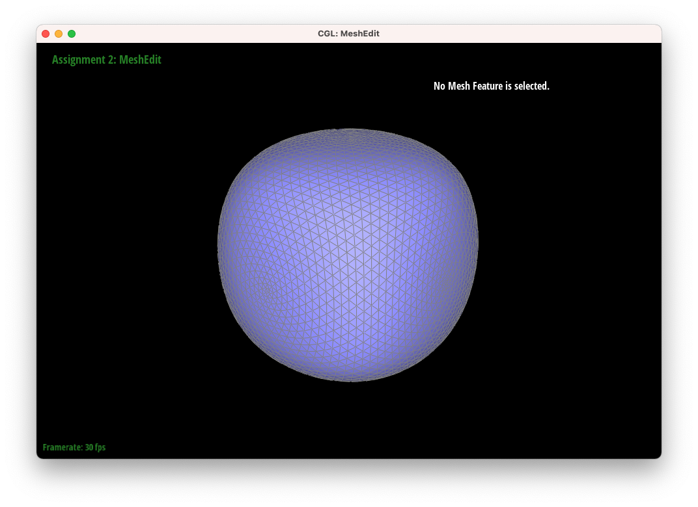
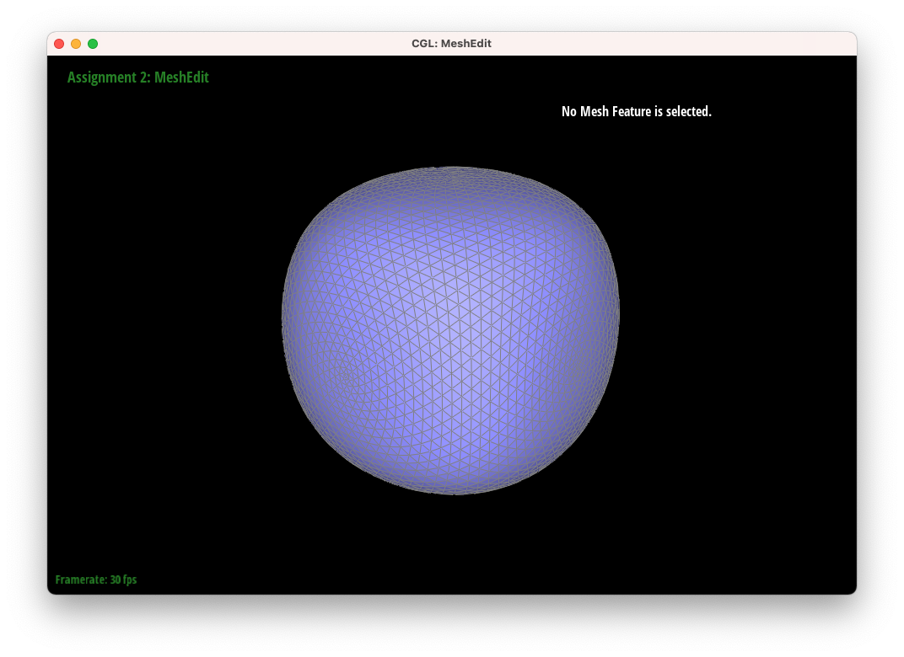

De Casteljau's algorithm helps us find a single control point that lies on the Bezier curve. In
task 1, we implemented one iteration of the algorithm: given n control points, we will calculate
the n-1 intermediate points by interpolating the two neighboring points out of the original n control
points (using the input parameter t).

Applying the deCasteljau algorithm to Bezier surfaces involves invoking the 1D deCasteljau algorithm for each row of control points, and then applying the 1D algorithm again for the interpolated points of each row to reach a final point on the Bezier surface. Each point is parameterized by two variables, u and v, where u is the parameter used when applying the algorithm to each row of control points while v is the parameter used to interpolate the final point on the surface.
For a given point, we traversed each half-edge connected to that vertex (via repeated calls to
next() and twin()). For each face that surrounds the vertex, we find the three vertices
of that face and then calculate two vectors corresponding to two edges of the triangle. We then take the cross
product of the two vectors to get a normal vector, scaled by twice the area of the triangle. Finally, we add all
of these cross products for each face and then normalize the vector to get the area-weight.
We first retrieved the original halfedges, vertices, and faces. Since we do not need to create any new elements, we
assigned the new halfedges (namely ad and da according to the image on the spec) to be the
halfedges of the original edge that we are trying to flip from (namely bc and cb), and we
assigned the new faces abd and adc to be the old faces abc and cbd.
However, after doing this, we need to reassign all of the next() edges for all of the halfedges (if they
have changed after the flip). We also need to reassign all of the face() of the halfedges. In addition, we
have to change the halfedge() of the new faces abd and adc, and the halfedges of
the vertices. In addition, we have to assign vertex a and d to be the vertex() field of the halfedges
ad and da. We did not encounter any bugs here until when we finished implementing task 6, add
we soon realized that it was because we forgot to reassign the halfedge() field of the new faces. Prior to
implementing this, we wrote down what each field of each of the halfedge, vertex, edge, face structures look like before
and after the edge flip to figure out what we need to reassign. That strategy helped save a lot of debugging pain.
We implemented edge split by creating one new vertex, six new halfedges, two new faces, and three new edges. Once the new objects were created, we reassigned each pointer appropriately. We wrote down the changes that need to be made to every vertex, edge, halfedge, and face before writing any code to make the process smoother. We also gave each vertex a name (a, b, c, d, and m) and named each halfedge according to its two endpoints, making the variable names easy to understand. As a result, we were able to implement this task easily without need for debugging.
To implement loop subdivision, we first calculated the new positions for all existing vertices and stored
them in Vertex::newPosition as well as setting Vertex::isNew to false.
Next, we computed the vertex positions for the new vertices, which we stored in Edge::newPosition,
and then split each edge and assigned the newly created vertex their new positions. Then, we flipped each edge
where one of its endpoints has Edge::isNew set to true while the other has it set to false. Finally,
we assigned the Vertex::position for each vertex to their Vertex::newPosition that we
computed earlier. We debugged our implementation by commenting out various parts of our implementation and testing
each part individually, where we uncovered some bugs with infinite loops when splitting edges and with forgetting to
reassign faces when flipping edges.

With each subdivision step, the sharp corners become more rounded out and the cube becomes smoother. The cube becomes asymmetric because each cube face has an edge running diagonally in one direction, but not the other. We can pre-process the cube by splitting the diagonal edge on each face of the cube first, so that each cube face has two symmetric, diagonal edges running through it.
 
